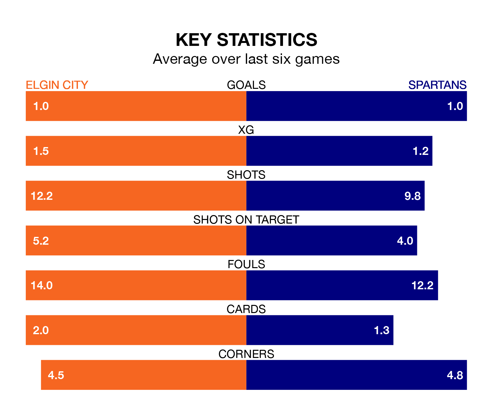

Relegation candidates Elgin City face a challenge against high-flying Spartans at Borough Briggs on Saturday.
Elgin City are seventh in the League Two table, and have picked up 10 wins and six draws in their 31 games to date.
The Spartans, meanwhile, are fourth in the standings with 49 points, having won 13 and drawn 10, and are 15 points behind table-toppers Stenhousemuir.
In Blair Henderson, Spartans have the league's most on-form striker so far this season. He has notched 15 goals in 30 appearances.
His goal rate of one every 168 minutes is much quicker than that of Russell Dingwall, Elgin's top scorer with a goal every 451 minutes, and a total of five goals in 26 games.
With 29 goals in 31 games so far this season, City are the league's lowest scorers with 0.9 goals per game. And they are conceding more than average, letting in 50 goals at a rate of 1.6 per game.
The Spartans, meanwhile, are above average scorers, with 1.5 goals per game, compared to a league average of 1.3. They have conceded 1.2 goals per game.
The Black & Whites are in mixed form in League Two, with two wins and two draws from their last six games.
With a win and three draws over that period, the visitors' form is slightly worse – they have taken six points from 18, compared to the home team's eight.
In the last three years, Elgin and Spartans have played each other on three occasions. Elgin won one of them and Spartans the other.
Their last meeting was on February 10, when Elgin won 2-1 away.
Elgin's last match was on Saturday, a 2-0 loss against East Fife.
Spartans beat Forfar Athletic 1-0 last time out, also on Saturday, with Mark McNulty on the scoresheet.
Updated: 16:41 (UTC), 04/04/24